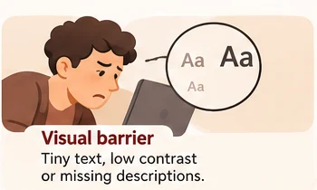
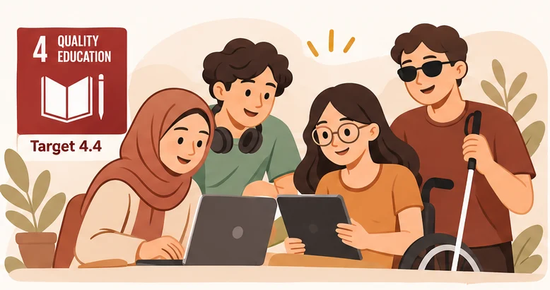
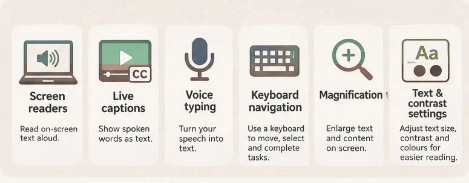
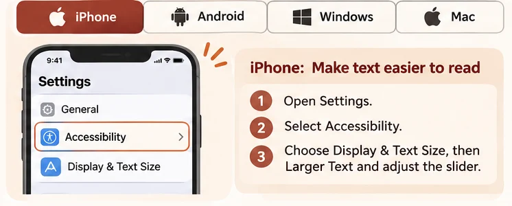
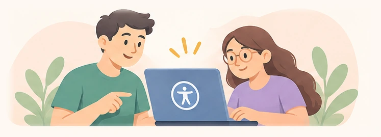

01 / 04
Visual barriers
Small text, weak contrast or images without descriptions can block understanding.
Example: A student cannot read tiny assignment instructions.
DIGITAL ACCESSIBILITY · SDG 4.4
A friendly, practical guide to removing digital barriers—and making the online world more inclusive, one small change at a time.
Explore the guideNo sign-up. No downloads. Just useful knowledge.

Digital accessibility means making websites, apps and digital information usable by people with different abilities and needs. It can involve screen readers, captions, clear navigation, readable text and flexible ways to interact.
Accessible technology helps people learn, communicate and work more independently. That supports the spirit of UN Sustainable Development Goal 4, Target 4.4: building relevant skills for education and employment.
02 · UNDERSTAND THE CHALLENGE
A digital barrier is anything that makes online information or services difficult to access. Here are four common types.
The point: people need different ways to access the same information.
03 · TOOLS THAT HELP
Many helpful tools come with the phone or computer you already own.

Speak text, buttons and other interface information aloud. They work best when digital content is clearly labelled.
Display spoken words as text during supported audio and video. Helpful for lectures and noisy surroundings.
Turn speech into text for messages, notes and documents when typing is difficult or inconvenient.
Move between links and controls using Tab, Shift + Tab and Enter without a mouse.
Enlarge a portion of the screen or zoom in to see details more comfortably.
Adjust text size and contrast to make information easier to read.
04 · MAKE IT YOURS
Select a device below to learn where to adjust text size. Menu names can vary by software version.
TEXT SIZE TUTORIAL
The available range may depend on the app and your iOS version.

Illustrative concept only · Real device screenshots will replace this image before publication.
05 · SEE THE DIFFERENCE
Compare two versions of a university course-registration message. Select either view.
Registration closes Friday. Review your choices before submitting.
Review coursesAccessible design: readable text, clear instructions and a descriptive action label help people know what to do next.
Write instructions that tell people exactly what action to take.
Keyboard users should be able to see which control is selected.
Text should remain readable against its background.
06 · EVERYDAY HABITS
You don't need to be a designer to make digital information easier to use.

Turn on captions for recorded lectures, zoom in on reading materials and use headings to organise your notes.
Describe meaningful images, use descriptive link text and don't rely on colour alone to communicate important information.
Choose readable text, logical headings, clear labels and strong contrast. Caption videos when possible.